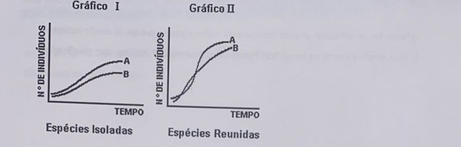

Professora: Kamila
Leia o quadrinho a seguir:
No quadrinho apresentado, Calvin nos chama a atenção para a grande quantidade de água presente em nosso organismo.
a) Cite três justificativas para as altas taxas de água encontradas nas células e nos seres vivos.
b) Apesar de Calvin citar em sua fala que o corpo humano é composto por 80% água, essa porcentagem pode variar de acordo com alguns fatores. Cite um deles e explique como essa variação ocorre.
Observa-se que a falta de ferro e de iodo compromete gravemente a saúde de populações em diversas partes do mundo. Além das consequências diretas de cada deficiência, pesquisadores identificaram que a ação de determinados tipos de vitaminas pode influenciar a eficácia na utilização desses minerais pelo corpo. A deficiência de uma vitamina específica, por exemplo, pode agravar os efeitos da falta de ferro, tornando mais difícil a produção de hemoglobina.
a) Descreva as funções do ferro e do iodo no corpo humano, e como suas deficiências afetam o organismo.
b) Explique a relação entre a vitamina que pode potencializar ou inibir a absorção do ferro no organismo após a alimentação. Cite dois exemplos de fontes alimentares dessa vitamina.
Segundo o Instituto Mineiro de Endocrinologia, embora o Brasil seja um país com abundância de dias ensolarados, diversos fatores têm dificultado a exposição ao sol dos seres humanos, tais como o estilo de vida moderno nas grandes cidades, o sedentarismo, o receio de danos à pele e o uso de protetor solar. Esses fatores têm causado um problema generalizado de deficiência de vitamina D na população.
a) Por que o receio dos danos do sol à pele e o uso do protetor solar podem ter relação com a deficiência de vitamina D na população?
b) Por que é importante que crianças em fase de crescimento tomem sol regularmente?
c) O que são vitaminas lipossolúveis?
Os médicos de uma cidade do interior do Estado de São Paulo, ao avaliarem a situação da saúde de seus habitantes, detectaram altos índices de anemia, de bócio, de cárie dentária, de osteoporose e de hemorragias constantes através de sangramentos nasais. Verificaram a ocorrência de carência de alguns íons minerais e, para suprir tais deficiências, apresentaram as propostas seguintes.
Proposta I - distribuição de leite e derivados.
Proposta II - adicionar flúor à água que abastece a cidade.
Proposta III - adicionar iodo ao sal consumido na cidade, nos termos da legislação vigente.
Proposta IV - incentivar os habitantes a utilizar panelas de ferro na preparação dos alimentos.
Proposta V - incrementar o consumo de frutas e verduras.
Diante destas propostas, responda.
a) Qual delas traria maior benefício à população, no combate à anemia? Justifique.
b) Qual proposta que, pelo seu componente iônico, poderia reduzir, também, os altos índices de problemas na tireoide na população? Por quê?
Cada marinheiro da esquadra de Cabral recebia mensalmente para suas refeições 15kg de carne salgada, cebola, vinagre, azeite e 12kg de biscoito. O vinagre era usado nas refeições e para desinfetar o porão, no qual, acreditava-se, escondia-se a mais temível enfermidade da vida no mar. A partir do século XVIII essa doença foi evitada com a introdução de frutas ácidas na dieta dos marinheiros. Hoje sabe-se que essa doença era causada pela deficiência de um nutriente essencial na dieta.
(Adaptado de: Bueno, E. A VIAGEM DO DESCOBRIMENTO. Rio de Janeiro. Objetiva. 1998.)
a) Que nutriente é esse?
b) Que doença é causada pela falta desse nutriente?
Na charge a seguir, extraída da Revista "Saúde" (fevereiro de 1996, p. 130, Seção Humor Spacca), encontram-se à venda, em forma de pastilhas, de comprimidos e de cápsulas, vitaminas extraídas de vegetais.
a) Que vegetais poderiam estar expostos nas bancas correspondentes às vitaminas A e C indicadas pelas placas, em substituição às pastilhas, comprimidos e cápsulas?
b) Que distúrbios orgânicos podem ser evitados pela ingestão de alimentos ricos em vitaminas A?
Certa espécie de anfíbio consegue sobreviver em locais entre 18°C e 30°C de temperatura ambiente. A temperatura média variando entre 20°C e 30°C presente em algumas matas litorâneas do Sudeste brasileiro torna o ambiente ideal para essa espécie viver. Esse anfíbio alimenta-se de pequenos invertebrados, principalmente insetos que se reproduzem nas pequenas lagoas e poças de água abundantes no interior dessas matas.
a) Qual é o habitat deste anfíbio?
b) Descreva seu nicho ecológico.
Na entomofilia, insetos são os agentes polinizadores das angiospermas. Pode ser realizada por abelhas, moscas, besouros, borboletas e vespas. Na sua forma mais comum, os insetos são atraídos pela cor e odor das flores. Além disso, nas flores encontram néctar para sua alimentação.
a) Nesse tipo de polinização pode-se observar entre insetos e plantas qual tipo de relação ecológica?
b) Essa relação é inter ou intraespecífica? Harmônica ou desarmônica? Justifique suas classificações.
Observe os gráficos referentes às curvas de crescimento populacional de duas espécies.

O gráfico I representa o crescimento populacional dessas espécies criadas isoladamente. O gráfico II representa o crescimento populacional dessas espécies reunidas numa mesma cultura.
Com base na comparação dos dois gráficos, qual é a provável relação ecológica entre as duas espécies? Justifique.
Cientistas monitoraram uma população de roedores, constituída por poucos indivíduos, que se instalou em uma área com abundância de recursos. O gráfico representa possíveis curvas de crescimento dessa população de roedores ao longo do tempo.
No gráfico, a atuação de predadores que se alimentam dos roedores e o potencial biótico dessa população são representados, respectivamente, por quais números? Justifique.